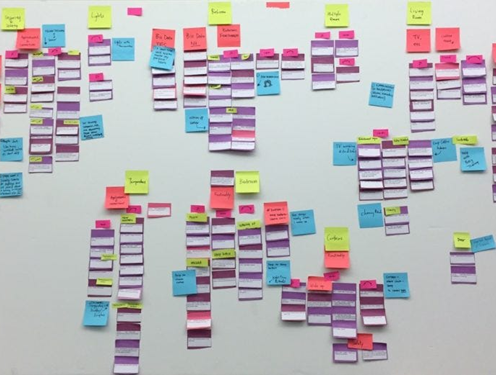
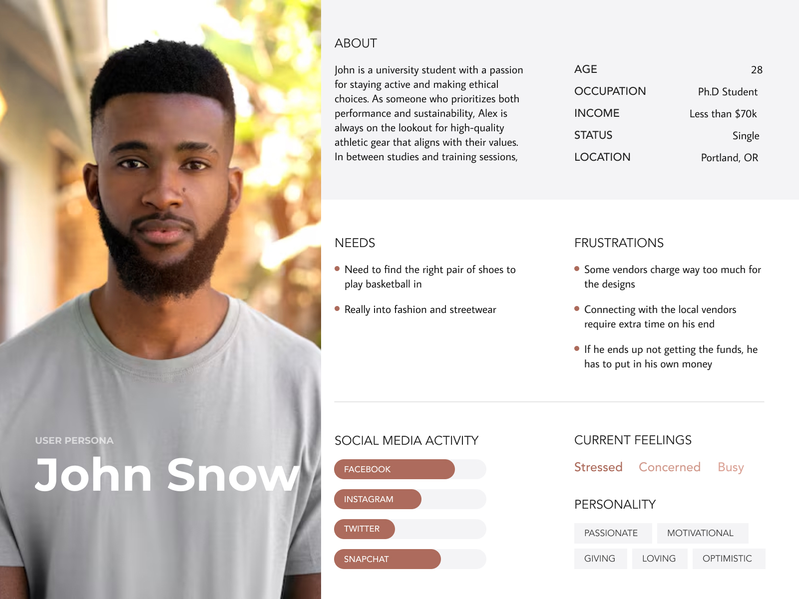
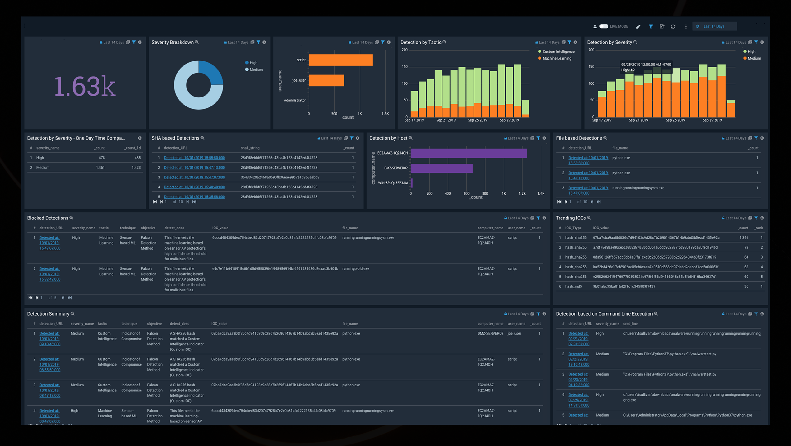

E-Commerce Inventory Management System
The E-Commerce Inventory Management System is a comprehensive solution
designed to streamline and optimize the management of inventory for
online retail platforms. This project aimed to improve the efficiency,
accuracy, and scalability of inventory tracking, enabling businesses to
effectively manage their product catalogs and reduce errors in stock
levels.
Research & Planning
We conducted user research with inventory managers, supply chain
professionals, and e-commerce platform operators to identify key pain
points. The key takeaways:
-
Users needed a centralized view to track inventory levels in
real-time.
-
Accurate stock levels were critical to prevent overselling or
understocking.
-
Automated alerts and reports were essential for efficient restocking
and forecasting.
-
Seamless integration with existing e-commerce platforms was a key
requirement.

Key Research Methods
-
User Interviews: Conducted with inventory managers,
warehouse supervisors, and e-commerce operators.
-
Competitive Analysis: Studied existing solutions like
Shopify's inventory management and Square for Retail.
-
Usability Testing: Iterated on the design based on
feedback from users working in a fast-paced retail environment.

Designing the Solution
1. Real-Time Inventory Tracking
-
📌 Solution: Implemented a robust inventory
management system capable of providing real-time updates for stock
across multiple sales channels.
-
Created a unified dashboard to view inventory across multiple
warehouses, regions, and product categories.
-
Designed an auto-sync system to update stock levels across all
platforms instantly after a sale or return.
-
Used color-coded status indicators to show inventory availability at a
glance (in-stock, low stock, out-of-stock).
2. Automated Stock Alerts & Restocking
-
📌 Solution: Developed an automated alert system for
low-stock warnings and stock replenishment suggestions.
-
Introduced restocking thresholds for automatic notifications when
stock levels fall below a predefined threshold.
-
Integrated with third-party suppliers to auto-place reorders based on
inventory needs.
3. Scalable Performance Architecture
-
📌 Solution: Built a scalable backend architecture
capable of handling millions of SKUs and frequent updates without
performance degradation.
-
Optimized database queries for fast access to large inventory data and
smooth updating of stock levels in real-time.
-
Leveraged cloud-based services for scalability to meet peak shopping
periods like Black Friday or seasonal sales.
4. User-Friendly Interface & Inventory Management Tools
-
📌 Solution: Designed an intuitive UI to manage
product catalogues, sales data, and inventory efficiently.
-
Built an easy-to-use product entry interface to quickly add new items,
modify stock levels, and update prices.
-
Developed advanced filtering and search capabilities to quickly locate
products by SKU, category, or supplier.
-
Enabled drag-and-drop functionality for seamless product
categorization and movement within the inventory system.

Results & Impact
-
✅ Reduction in Stockouts – Real-time inventory updates and alerts
helped reduce stockout incidents.
-
✅ Improvement in Order Fulfillment Speed – Automated inventory
tracking and reporting sped up order processing and fulfillment.
-
✅ Increased Sales Efficiency – Accurate inventory forecasting and
reporting helped prevent overstocking and overselling.
Key Takeaways
-
Real-time inventory updates improve operational efficiency and reduce
errors.
-
Scalable architecture is essential for handling large and dynamic
product catalogs.
-
An intuitive UI and automated tools streamline daily operations and
improve user productivity.
Final Thoughts
The E-Commerce Inventory Management System successfully optimized
inventory management for online businesses, providing an easy-to-use,
scalable solution that reduces errors, enhances stock visibility, and
improves sales efficiency.